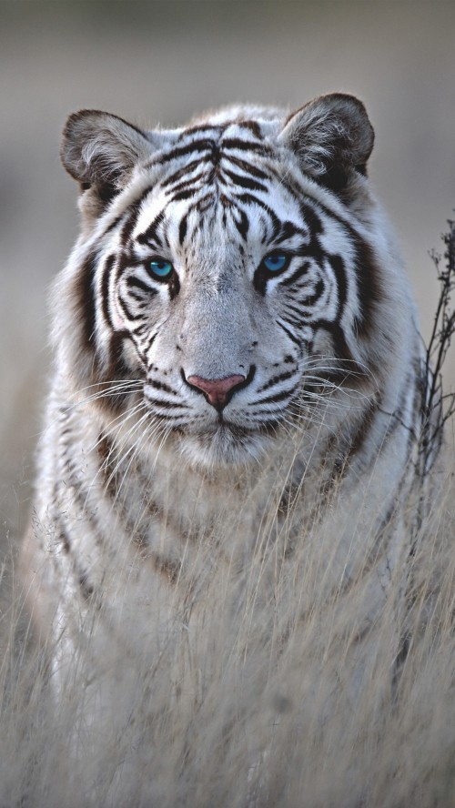

Sobre NosotrosReserva de vida Salvaje de Moroleón (ZooBD)Ubicado en un entorno de selva tropical, el mundialmente famoso "Concepto Abierto" del Zoológico ZooBD ofrece la oportunidad de experimentar e inspirarse en las maravillas de la naturaleza. Hogar de más de 2.400 especímenes de más de 300 especies, el 34 por ciento de las cuales están amenazadas, el Zoológico ha alcanzado una sólida reputación a nivel internacional por sus iniciativas de conservación y programas de reproducción. Anualmente, aproximadamente 1,9 millones de visitantes disfrutan de viajes de aprendizaje experiencial en el galardonado zoológico de 26 hectáreas. El Zoológico de Singapur es parte de las Reservas de Vida Silvestre de Singapur. El zoológico es un centro de vida silvestre rescatado designado por la autoridad gobernante. Volver a Inicio |
 |